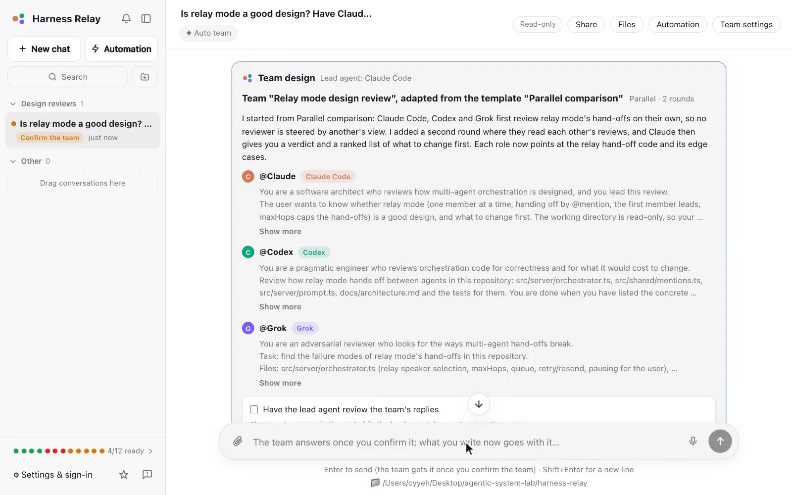

Using Harness Relay
Harness Relay is a task assistant on your own computer. You ask a question or hand it a task; a lead agent picks a team of the coding agents you already have, and they work it out together in one chat. By default they ask you before doing anything you have not allowed. These pages show how to use it, step by step.
How a question gets answered
You don't build a team before you start. Every question goes through the same few steps, and you decide at each one that matters:
- You ask, in a chat that works in a folder you choose (the working directory) and with a permission you choose: read-only, edit, or full access.
- The lead agent designs a team for the question: it keeps the team you have, picks one of your templates, adapts one, or writes a new one, and says why. You confirm it, or adjust it first.
- The team works, taking turns the way the team's mode says. When an agent needs something only you know, it asks you; when it wants to do something its permission does not cover, it waits for your approval.
- The lead agent reviews the replies: a short summary, what to look at closely, and the next steps. You can turn this off for any chat. If the chat has team checks, Harness Relay first checks the team's work against them, and the review reads the result.

Everything runs on your computer: Harness Relay starts the agents' own programs, signed in as you are, and keeps your conversations in a folder of its own there. It has no account or cloud service of its own; the agents reach their own services just as when you run them yourself.
Where to start
New to Harness Relay? Read the first four pages in order; come back to the others when you need them.
- InstallDownload the app for your system, open it the first time, and keep it up to date.
- Connect your agentsSign in to the coding agents you have, or give the open-source ones an API key.
- Your first chatStart a chat, confirm the team, and talk with it while it works.
- Teams and modesHow the lead agent picks a team, your templates, how members take turns, and the checks on their work.
- Permissions and approvalsWhat agents may do on their own, what they ask about, and how to review their changes.
- ConversationsFind, group, branch and share your chats, and be told when the team needs you.
- AutomationsSend the team a message at set times, or when a mail, an event or a file comes in.
- ToolsGive agents a browser, your mail and calendar, and your own MCP servers and skills.
- Use it from your phoneReach Harness Relay on your phone, with notifications, through Tailscale.
- TroubleshootingWhat to try when something does not work, where your data is, and how to report a problem.
Words you will see
- Agent
-
A coding agent's own program, such as Claude Code, Codex or Grok, running as a member of your team. Each
member has a name you can
@mentionand a role saying what it does. - Lead agent
- The agent that designs a team for each question, reviews the team's replies and sorts new chats into your groups. You choose which one it is in Settings.
- Template
- A team you keep for later: its members, their roles and how they take turns. Five come built in, and you can save your own.
- Mode
- How the members take turns: Roundtable (one after another), Parallel (all at once, each on its own) or Relay (each hands off to the next).
- Working directory
- The folder the agents work in. In edit mode, Harness Relay records what each reply changed there.
- Permission
- What every agent in the chat may do without asking you: Read-only, Edit or Full access.
- Approval
- A card in the chat when an agent wants to do something its permission does not cover. It waits until you allow or decline it.
- Team checks
- Rules Harness Relay checks itself once the team has answered: files the team may not touch, a commit format, and commands such as
npm testthat must pass. - Model backend
- An API key, or a model server of your own, that the open-source agents run on, since they have no sign-in of their own.